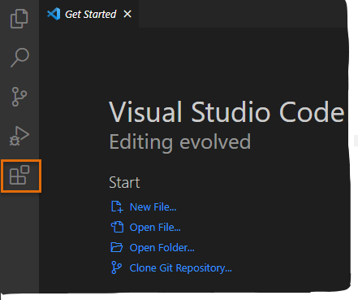
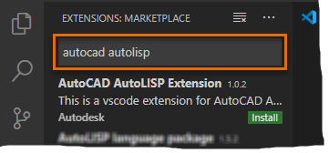
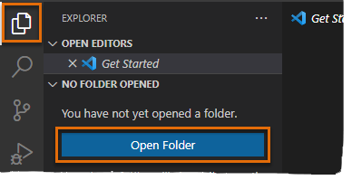
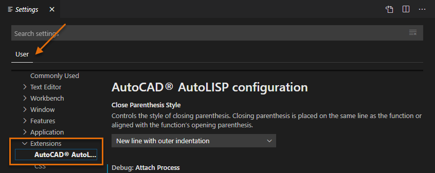
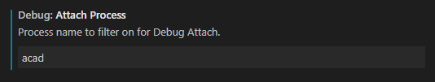
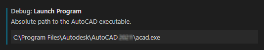

After you have installed Microsoft Visual Studio (VS) Code, you can install and configure the AutoCAD AutoLISP Extension which will allow you to manage and debug custom AutoLISP programs.
Install the AutoCAD AutoLISP Extension
The AutoCAD AutoLISP Extension can be found in the Visual Studio Code Marketplace, accessible from inside of the Visual Studio Code application.
The following steps explain how to install the AutoCAD AutoLISP Extension from the Visual Studio Code Marketplace.
-
Launch Visual Studio Code.
Do one of the following:
-
Windows:
Click the Windows Start button, and then click Visual Studio Code > Visual Studio Code.
-
Mac OS:
In Finder, click Go > Applications and then click Visual Studio Code in the Applications window.
-
In Visual Studio Code, on the Activity Bar, click Extensions (or click View menu > Extensions).

-
In the Extensions Search box, type
autocad autolisp
.

-
From the search results list, click Install under the AutoCAD AutoLISP Extension item.
After a few moments, the extension should be installed and listed in the Installed Extensions list.
Add a Working Folder
A working folder is required to store configurations for debugging AutoLISP (LSP) files, but the folder can also be used to manage your LSP files.
The following steps explain how to create a folder named
LSP Files
on your local drive in the
Documents
folder and then how to open that folder in Visual Studio Code.
Note:
Feel free to use a different name than
LSP Files
or to store the folder in a different location other than
Documents
. Just remember to substitute the location and name throughout the remainder of the tutorials.
-
Do one of the following:
-
Windows
-
-
Click the Windows Start button, and then click Windows System > File Explorer or press Windows key + E.
-
In File Explorer, click in the address bar and type
Documents
. Press Enter to open the
Documents
folder.
-
On the Home tab, click New folder from the New panel.
-
In the in-place editor, type
LSP Files
and press Enter.
-
Mac OS
-
-
In Finder, on the Mac OS menu bar, click Go menu > Documents.
-
In the Documents window, on the Mac OS menu bar, click File menu > New Folder.
-
In the in-place editor, type
LSP Files
and press Enter.
-
Switch to Visual Studio Code.
-
In Visual Studio Code, on the Activity Bar, click Explorer and then click Open Folder (or click File menu > Open Folder/Open).

-
In the Open Folder dialog box, browse to and select the
LSP Files
folder.
-
Click Select Folder on Windows or Open on Mac OS.
Configure the Debug Configurations (Not supported with AutoCAD LT)
Visual Studio Code needs to be connected to AutoCAD for debugging, this connection is made through the use of a debug configuration.
Note:
Debugging AutoLISP programs in AutoCAD LT isn't supported with the AutoLISP Extension for Microsoft Visual Studio (VS) Code.
The following steps explain how to add the necessary debug configurations needed to connect Visual Studio Code to AutoCAD.
-
In Visual Studio Code, click File menu > Preferences > Settings.
-
On the User tab, expand Extensions and click AutoCAD AutoLISP Configuration.

-
In the Debug: Attach Process text box, enter one of the following values in bold:
-
(Windows)
acad
-
(Mac OS)
AutoCAD

Note:
The process name is case sensitive, so acad or AutoCAD isn’t the same as ACAD or autocad.
-
In the Debug: Launch Program text box, enter the absolute path to the AutoCAD executable.
The absolute path varies based on the release and platform on which AutoCAD was installed.
-
(Windows)
"C:\Program Files\Autodesk\AutoCAD
2025
\acad.exe"
-
(Mac OS)
"/Applications/Autodesk/AutoCAD
2025
/AutoCAD
2025
.app/Contents/MacOS/AutoCAD"

-
Optionally, in the Debug: Launch Parameter text box, specify any command line switches during the launch of the AutoCAD application.